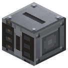
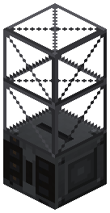
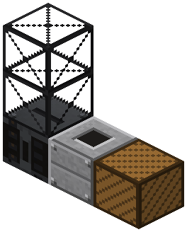
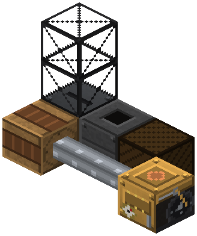
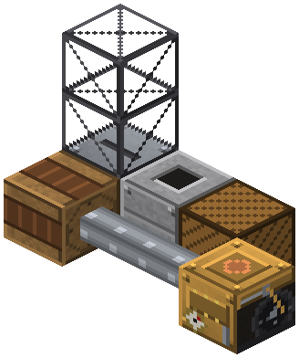

Тяжёлый экскаватор


Квадрат 9x9 вокруг себя, вдвое быстрее. Секции стрелы сверху: до 3, 21x21, мощность x1.5 на секцию.
Тяжёлый экскаватор (сталь): квадрат 9x9 вокруг себя, вдвое быстрее на блок, 32 л.с.
- Секции стрелы столбиком сверху: каждая +2 клетки во все стороны — 9 → 13 → 17 → 21x21 (максимум 3 секции).
- Мощность ×1.5 на секцию: 32 / 48 / 72 / 108 л.с. Блоков в секунду — как без стрелы.
- Остальное — как у бронзового: бункер, люки, засыпка (Shift + пустая рука), пауза редстоуном, столб под машиной цел.
Параметры
| Эпоха | 3 — Электричество |
|---|---|
| Многоблок | нет |
| Привод | вал |
| что делает | то же 9x9 -> 21x21, вдвое быстрее на блок |
| энергия на входе | вал 32 × 1.5^секций |
| из чего | паровой экскаватор, ведро, блок стали, стальные шестерни и листы, стальной вал IC2 |
| л.с. | 32 × 1.5^секций |
Числа
| экскаватор | 16 л.с. |
|---|---|
| тяжёлый экскаватор | 32 л.с. |
| экскаватор: предел секций стрелы (5x5 -> 13x13) | 4 секций |
| стальной экскаватор: предел секций (9x9 -> 21x21) | 3 секций |
| экскаватор: прирост радиуса на секцию | 1 клеток |
| стальной экскаватор: прирост радиуса на секцию | 2 клеток |
| экскаватор: множитель мощности на секцию | 1.5 |
Кого кормит
- машины Zavod её продукт не едят
Как устроено (из кода)
Тяжёлый экскаватор (сталь): карьер 9x9 по центру (секциями до 21x21) и вдвое быстрее на блок, берёт больше оборотов.
Сборка
Shift + пустая рука — копка / засыпка. Редстоун — пауза.

Экскаватор: копает квадрат 9x9 вокруг себя слоями до дна, свой столб не трогает.

Секции стрелы столбиком сверху (до 3, тут 2): квадрат +4 с каждой, мощность x1.5.

Люк выгрузки вплотную, лицом — в сундук или вагонетку на рельсах.

Привод: шкив сбоку, вал — к паровой машине.

сундук или другой инвентарь (не наш блок)
Бледное — поставлено на прошлых шагах.